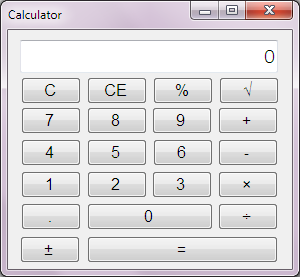
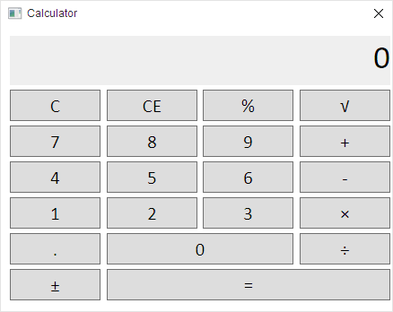

Introduction
This page includes information on how a calculator program is implemented using my CBOR library for C#. (CBOR stands for Concise Binary Object Representation.) This page shows a Windows Forms and a Windows Presentation Foundation (WPF) version of the same program, demonstrating how my library works well in both kinds of programs.
 
While it looks relatively simple, the calculator program demonstrates two features of that library:
- Its support for arbitrary precision arithmetic.
- Reading and writing data in CBOR.
These two features will be discussed in turn.
Arbitrary-Precision Arithmetic
The main purpose of the program, of course, is to do calculations. This calculator program
is powered by my CBOR library's support for arbitrary-precision decimal arithmetic. While
double, a 64-bit binary floating point number type, is appropriate for most purposes, it can
sometimes provide unintuitive results, due to using a binary rather than a
decimal system.
The CBOR library supports arbitrary precision numbers (both binary and decimal) mostly because several CBOR tags (two of which are defined in the Request For Comments that defines CBOR) support these kinds of numbers, and it was seen useful to perform arithmetic and other useful operations on these kinds of numbers.
The CalculatorState class stores the calculator's current state, such as which number is currently
being displayed and which operation is currently being carried out. The following lists some
of the methods of CalculatorState:
public CalculatorState(int maxDigits);
public string Text { get; }
public bool DotButton();
public bool PlusMinusButton();
public bool EqualsButton();
public bool DigitButton();
The CalculatorState constructor initializes a calculator state with a digit precision of maxDigits. This
means that up to that many digits will be shown on the display. The calculator program sets this to
18 (at the MainForm constructor), but this can be set to any number desired (as long as it's 1 or more).
CalculatorState use the CBOR library's ExtendedDecimal class for storing numbers and doing
operations on them, and it uses that library's PrecisionContext class to limit their precision to the
given number of digits.
The Text property gets a string showing what the calculator is currently displaying. This string is
retrieved each time a button is pressed and the text box at the top is updated with that string.
The class also includes several methods ending in Button, such as DotButton and DigitButton. These
methods change the calculator state so it behaves much like an ordinary calculator would with the
corresponding buttons. For example, the DotButton method adds a dot to the current input if it doesn't
have one already; the EqualsButton method carries out an arithmetic operation, and so on.
Abstraction
The CalculatorState class exists as an abstraction; it separates the calculator logic from the
calculator user interface, and can be considered part of the "model" in the "model-view-controller" design
pattern. Because of this abstraction, this class can be used in other programs, besides Windows Forms
programs, that need the functionality of a calculator.
A second abstraction is the "controller": the CalculatorController class uses an interface to the
program's main window (IWindowInfo) and contains similar methods to the CalculatorState class,
except it acts more like a controller than a data model (each form implementation calls into
CalculatorController rather than CalculatorState.) The Windows Forms and WPF versions of the
calculator have different IWindowInfo implementations
Storing Application Settings
CBOR's compact data format suits it well for storing things such as user settings.
The calculator program demonstrates this; when the program exits, it gets the window's current position and size, stores them in a user settings object, and converts the user settings object to a CBOR file.
The ProgramConfig class is used to store user settings. It has these methods:
public ProgramConfig(string configName); public ProgramConfig SetObject(string name, object obj); public string GetString(string name); public int GetInt32OrDefault(string name, int defaultValue); public double GetDoubleOrDefault(string name, double defaultValue); public double GetDouble(string name);
In case the program is installed in what can be a read-only location, such as the Program
Files folder, the calculator stores user settings in per-user application storage. This is
possible with the System.IO.IsolatedStorage namespace supported in .NET 4. (Windows
Store apps use a separate concept for application storage, which isn't supported in the
demo, but which can be easily added due to the nature of the implementation, as
discussed below.)
Loading and Saving
The ProgramConfig constructor opens a named file from per-user storage (with the ".cbor"
extension, since it loads and saves CBOR files), and generates blank user data if the
file doesn't exist (which is usually the case when the program is first run) or the file contains
invalid data. The calculator creates a ProgramConfig constructor on load of the form
(see MainForm.cs):
private void MainForm_Load(object sender, EventArgs e) {
// Initialize config here, rather than in the constructor;
// the system may automatically move the window in between
this.config = this.InitializeConfig();
}
private ProgramConfig InitializeConfig() {
return new ProgramConfig("config").FormPosFromConfig(this);
}
On the first run, the ProgramConfig is generated and populated with default values
for the window's current position as it's loaded for the first time (due to the
FormPosFromConfig method).
As the program is closing, it retrieves the window's current position and saves the user data to per-user storage:
private void MainForm_FormClosing(object sender, FormClosingEventArgs e) {
this.SaveConfig();
}
private void SaveConfig() {
if (this.config != null) {
this.config.FormPosToConfig(this).Save();
}
}
As a result, the last used window position and size are restored if the user runs the program again.
It's also possible to save user settings while the program is running (for instance, after the user changes a program setting) or to access user settings at runtime, but these possibilities are currently not demonstrated in the calculator program.
Reading and Writing Settings
The ProgramConfig class creates a CBOR key-value map. Three
of its methods, GetString, GetInt32OrDefault, and GetDouble,
retrieve a value by its key. The method SetObject converts many kinds
of objects (not just strings and numbers) to an appropriate format for
the CBOR key-value map.
The calculator demo, though, uses only numbers (for the window position
and size), so it calls GetDoubleOrDefault and sets the default value for
each parameter to the current position and size of the window as its
generated. (GetDoubleOrDefault uses the default if the key doesn't
exist or if the existing value has the wrong type or can't be converted.)
To be more specific, the calculator demo uses the following keys
in the ProgramConfig map:
"x"- X coordinate of the calculator window's top-left corner."y"- Y coordinate of the window's top-left corner."width"- Width, in pixels, of the window's top-left corner."height"- Height, in pixels, of the window's top-left corner.
There are currently only three kinds of data that ProgramConfig can "get":
strings, doubles, and 32-bit unsigned integers (ints). This is often adequate
for most kinds of user settings (for example, boolean values -- either
true or false -- can be expressed using integers or strings), but of
course, CBOR can store many other kinds of data types, such as
nested arrays, nested maps, byte sequences, the undefined-value,
and numbers of arbitrary precision. But for user settings, especially for the calculator
demo, the three data types string, double, and int are often sufficient.
ProgramConfig implementation
I've made the ProgramConfig class general enough that it can be used in many different
kinds of programs; for instance, it's also used in another demo program of
mine that converts JSON
to CBOR and back. This program, too, saves the last known window position
and size in the same way as the calculator demo. Certain "methods" of ProgramConfig
were designed as extension methods and placed in a separate class, FormConfig.
(FormConfig takes an abstract object that implements the IWindowInfo interface and
retrieves and sets the window position. There is a separate IWindowInfo implementation
for the Windows Forms and WPF versions.)
However, while ProgramConfig is very general, it relies on isolated storage, which
unfortunately isn't supported in Windows Store apps, which use a very different
concept for per-user storage. (Isolated storage can be used in Windows Forms and
WPF apps, as is done in this demo.) This is why ProgramConfig contains a nested class
called IsolatedStream, which is designed to wrap the details of the per-user storage
implementation.
If a version of per-user storage for Windows Store apps is needed,
IsolatedStream can be updated to provide or call a Windows-Store-specific
implementation of per-user storage. This isn't done here, since the main purpose
is to demonstate the features of my CBOR library.
I should note that the CBOR library itself contains no methods to directly read and
write to files; it instead reads and writes data to streams (such as the Read and
WriteTo methods for CBOR data and ReadJSON and WriteJSONTo methods
for JavaScript Object Notation).
Conclusion
That concludes my discussion on how a calculator program is implemented using my CBOR library for C#, including how its features fit into the program's design as well as tips on storing per-user settings in an application program.